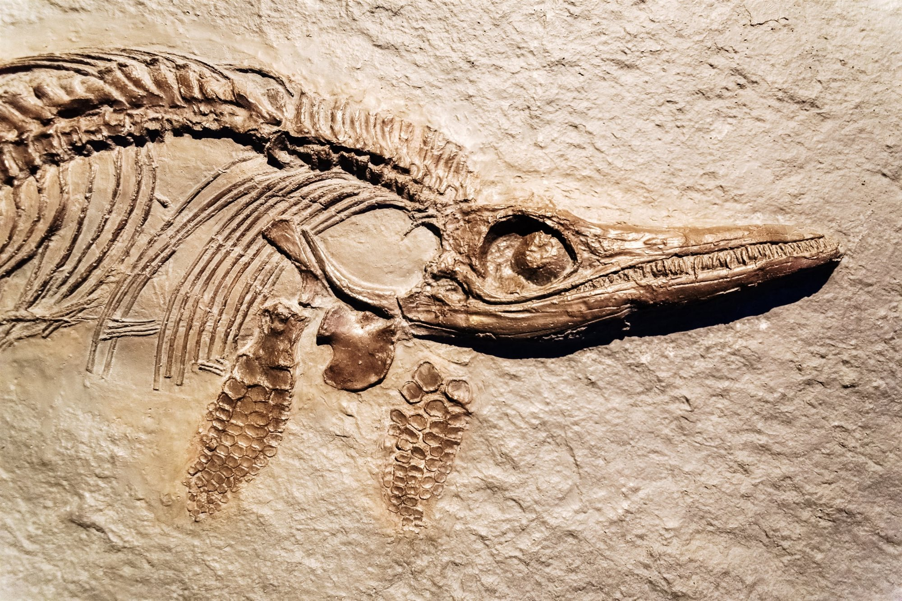

RECETA DE LA ABU
Piedras de rio seco 3kg
Hojalata sin oxidar 12g
Patatas fresquitas 450g
Macarrones de polastico 300g(favoritos de la infancia)
Tijeras
Mezclamos todo i esperamos q se fosilize
Resultado:
